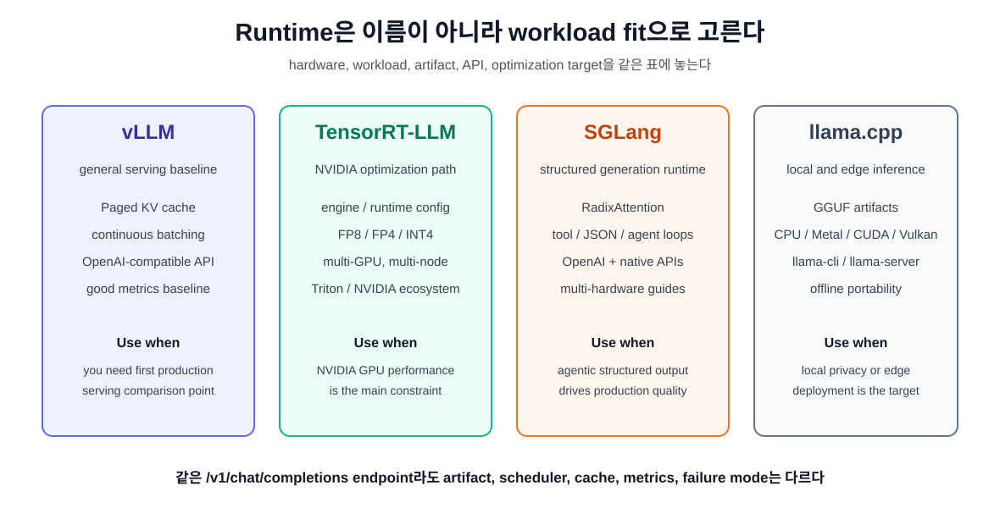
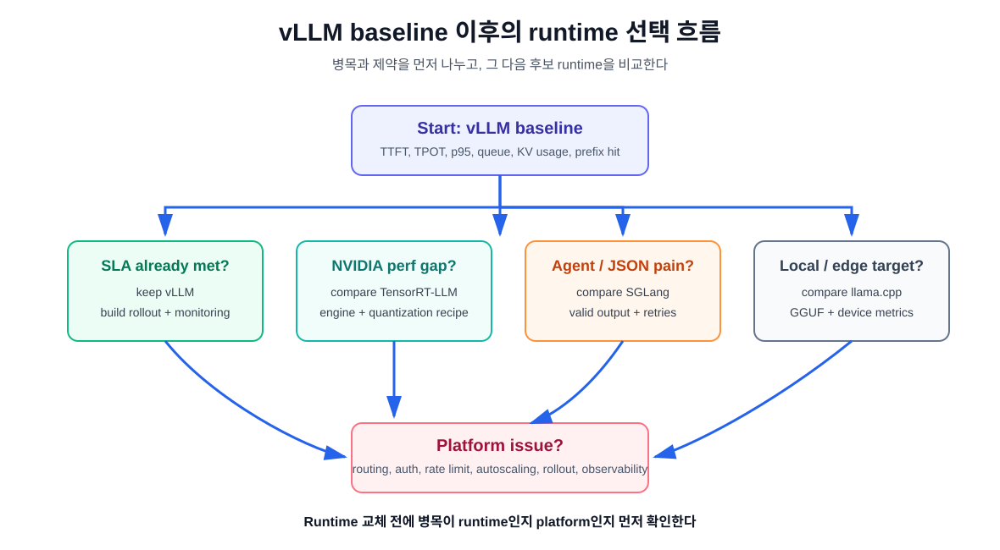

10장. TensorRT-LLM, SGLang, llama.cpp는 무엇이 다른가¶
9장에서 vLLM을 baseline으로 세웠다. 이제 자연스러운 질문은 이것이다.
vLLM 말고 TensorRT-LLM, SGLang, llama.cpp는 언제 검토해야 하는가?
이 질문을 "어느 runtime이 제일 빠른가"로 바꾸면 답이 흐려진다. Runtime 선택은 순위표가 아니라 workload fit의 문제다. 같은 OpenAI-compatible endpoint를 제공하더라도 내부 목표가 다르다. 어떤 runtime은 NVIDIA data center GPU에서 throughput을 끝까지 밀어붙이는 데 강하고, 어떤 runtime은 structured generation과 agent loop를 다루기 좋고, 어떤 runtime은 로컬 노트북이나 edge device에서 모델을 직접 돌리는 데 강하다.
이 장의 독자 질문은 다음과 같다.
Serving runtime을 이름이 아니라 workload와 운영 제약으로 고르려면 어떤 질문을 해야 하는가?
핵심은 하나다. Runtime은 "모델 실행기"가 아니라 hardware, model artifact, scheduler, cache, API, deployment workflow를 묶은 운영 선택지다.
먼저 비교 축을 고정한다¶
Runtime 비교표를 만들 때 기능 이름만 나열하면 판단이 어렵다. AI 인프라 엔지니어가 먼저 고정해야 할 축은 다음 다섯 가지다.
| 비교 축 | 질문 |
|---|---|
| target hardware | NVIDIA H100/B200 같은 data center GPU인가, Apple Silicon/CPU/edge인가? |
| workload shape | short chat, long context, batch inference, agent loop, structured output 중 무엇이 주인가? |
| model artifact | Hugging Face checkpoint, TensorRT engine, GGUF, quantized artifact 중 무엇을 release 단위로 쓸 것인가? |
| 운영 인터페이스 | OpenAI-compatible API만 필요한가, native API나 engine build pipeline이 필요한가? |
| 최적화 목표 | TTFT, TPOT, throughput, cost, local privacy, deployment simplicity 중 무엇이 우선인가? |
이 축이 정해져야 vLLM baseline과 다른 runtime을 비교할 수 있다.

TensorRT-LLM: NVIDIA stack을 깊게 쓰는 선택¶
TensorRT-LLM은 NVIDIA GPU에서 LLM inference를 최적화하기 위한 open-source library다. NVIDIA 문서는 TensorRT-LLM을 PyTorch 기반 LLM API, TensorRT engine, Python/C++ runtime, multi-GPU/multi-node deployment, quantization, paged attention, in-flight batching 같은 기능을 묶은 inference stack으로 설명한다.
이 runtime을 검토할 만한 상황은 명확하다.
- target hardware가 NVIDIA data center GPU이고, hardware generation까지 통제할 수 있다.
- 특정 모델과 특정 GPU에서 latency 또는 throughput을 깊게 최적화해야 한다.
- FP8, FP4, INT4 같은 low precision path를 NVIDIA kernel과 함께 검증하려 한다.
- tensor parallel, pipeline parallel, expert parallel 같은 multi-GPU 전략이 필요하다.
trtllm-serve,trtllm-bench, Triton Inference Server, NVIDIA Dynamo 같은 주변 stack과 연결하려 한다.
TensorRT-LLM의 강점은 "일반적인 편의성"보다 "NVIDIA stack 안에서 최적화 깊이를 가져가는 것"에 있다. 공식 문서도 FP8/FP4, in-flight batching, paged attention, chunked prefill, speculative decoding, KV cache management, disaggregated serving 같은 production-oriented optimization을 강조한다.
하지만 비용도 있다.
| 장점 | 비용 |
|---|---|
| NVIDIA GPU 최적화 깊이가 크다 | hardware와 software version 의존성이 커진다 |
| engine build와 quantization path를 세밀하게 통제할 수 있다 | artifact lifecycle이 복잡해진다 |
| multi-GPU/multi-node inference 기능이 강하다 | benchmark와 release 재현 기록이 더 중요해진다 |
| Triton/NVIDIA ecosystem과 연결하기 좋다 | non-NVIDIA 환경으로 옮기기 어렵다 |
따라서 TensorRT-LLM은 "vLLM보다 빠르냐"가 아니라 "우리 production target이 NVIDIA GPU이고, 이 workload에 대해 engine build와 release engineering을 감당할 만큼 성능 이득이 필요한가"로 판단해야 한다.
SGLang: structured generation과 agentic workflow를 위한 선택¶
SGLang은 large language model과 multimodal model을 위한 high-performance serving framework다. 공식 문서는 SGLang을 low-latency, high-throughput inference를 목표로 하며 RadixAttention, prefix caching, multi-GPU parallelism을 제공하고, Hugging Face와 OpenAI API와 호환된다고 설명한다. SGLang paper는 frontend language와 runtime을 함께 제안하고, 복잡한 language model program, structured input/output, multiple generation call, control flow를 중요한 대상으로 둔다.
SGLang을 검토할 만한 상황은 다음과 같다.
- 단일 chat completion보다 agent loop, multi-call workflow, structured output이 중요하다.
- JSON, tool call, constrained decoding, reasoning parser 같은 output control이 운영 품질에 직접 연결된다.
- prefix reuse와 KV cache reuse가 agent workload에서 큰 비중을 차지한다.
- OpenAI-compatible API도 쓰지만 native
/generate같은 더 유연한 API도 필요하다. - NVIDIA뿐 아니라 AMD, Intel, TPU, Ascend, Apple Silicon 등 다양한 hardware target을 검토한다.
SGLang의 핵심 차이는 "LLM request 하나"보다 "LLM program 실행"에 더 가깝다는 점이다. 예를 들어 일반 chat API 서버에서는 tool call이 application loop 밖에서 관리될 수 있다. SGLang 관점에서는 여러 generation call, selection, parallel control flow, structured decoding이 runtime 최적화 대상이 된다.
운영 관점에서 SGLang은 특히 다음 지점에서 vLLM baseline과 비교하면 좋다.
| 비교 질문 | SGLang에서 볼 포인트 |
|---|---|
| tool call JSON이 안정적인가 | structured outputs, guided/constrained decoding |
| agent loop가 prefix를 반복하는가 | RadixAttention, prefix caching, KV reuse |
| multimodal/large MoE model을 다루는가 | model cookbook, hardware-specific recipes |
| OpenAI API 외 native API가 필요한가 | /v1/chat/completions, /generate, offline/native APIs |
| 다양한 accelerator를 검토하는가 | hardware platform guides |
SGLang을 선택할 때도 과신은 금물이다. Structured generation이 중요하지 않은 단순 chat serving이라면 vLLM baseline이 더 단순할 수 있다. NVIDIA GPU에서 특정 model throughput을 극한까지 밀어야 한다면 TensorRT-LLM이 더 맞을 수 있다. SGLang은 agentic/structured workload fit을 먼저 확인해야 한다.
llama.cpp: local, edge, GGUF 중심의 선택¶
llama.cpp는 C/C++ 기반 LLM inference project다. 공식 README는 llama.cpp를 "LLM inference in C/C++"로 설명하고, Metal, CUDA, HIP, Vulkan, SYCL, BLAS, OpenVINO, WebGPU 등 여러 backend를 나열한다. 또한 model은 GGUF format을 요구하며, llama-cli와 OpenAI API compatible llama-server를 제공한다.
llama.cpp를 검토할 만한 상황은 다음과 같다.
- 개발자 workstation, 노트북, Apple Silicon, CPU-only server, edge device에서 local inference가 필요하다.
- privacy나 offline requirement 때문에 외부 model serving cluster를 쓰기 어렵다.
- GGUF quantized model artifact를 배포 단위로 쓰고 싶다.
- 최대 throughput보다 설치 단순성, portability, local debugging이 중요하다.
- application 안에 inference를 가볍게 붙이거나 local tool로 제공하려 한다.
llama.cpp의 중심 artifact는 GGUF다. GGUF는 model tensor와 metadata를 담는 파일 format이고, quantized weight를 포함할 수 있다. 그래서 llama.cpp를 선택한다는 것은 runtime만 고르는 것이 아니라 GGUF 변환, quantization type, local hardware backend, context size, parallel decoding 설정까지 함께 고르는 것이다.
운영 관점의 장단점은 다음처럼 정리할 수 있다.
| 장점 | 비용 |
|---|---|
| CPU, Apple Silicon, consumer GPU, edge 등 portability가 좋다 | data center GPU serving benchmark와 직접 비교하기 어렵다 |
| GGUF artifact 배포가 단순하다 | artifact 변환과 quantization 선택 책임이 생긴다 |
| local privacy/offline UX에 강하다 | centralized autoscaling, multi-tenant 운영은 별도 layer가 필요하다 |
llama-server로 OpenAI-compatible endpoint를 제공할 수 있다 |
high-concurrency production serving은 별도 검증이 필요하다 |
따라서 llama.cpp는 "느린 vLLM 대체제"가 아니다. Target 자체가 다르다. Data center GPU pool에서 높은 throughput을 내는 것보다, 사용자 기기나 작은 서버에서 모델을 직접 실행하는 문제가 중심일 때 비교해야 한다.
같은 OpenAI-compatible API라도 같은 시스템이 아니다¶
vLLM, TensorRT-LLM, SGLang, llama.cpp 모두 어떤 형태로든 OpenAI-compatible API를 제공하거나 연결할 수 있다. 하지만 endpoint 모양이 같다고 운영 성격이 같지는 않다.
| Runtime | API 관점 | 내부 차이 |
|---|---|---|
| vLLM | OpenAI-compatible baseline | scheduler, PagedAttention, metrics 중심 |
| TensorRT-LLM | trtllm-serve와 OpenAI-style serving 경로 |
NVIDIA engine, kernel, quantization, multi-GPU optimization 중심 |
| SGLang | OpenAI-compatible API와 native /generate API |
structured generation, RadixAttention, agent workflow 중심 |
| llama.cpp | llama-server의 OpenAI-compatible HTTP server |
GGUF, local backend, quantized local inference 중심 |
Application code만 보면 모두 base_url을 바꾸는 문제처럼 보일 수 있다. 하지만 인프라 입장에서는 release artifact, metric, scaling policy, failure mode가 다르다.
예를 들어 같은 /v1/chat/completions 요청이라도 다음이 달라진다.
- model artifact가 HF checkpoint인지 TensorRT engine인지 GGUF인지
- quantization이 runtime flag인지 offline artifact인지
- KV cache가 어떤 block/cache policy로 관리되는지
- structured output이 runtime feature인지 application retry loop인지
- benchmark 도구와 metric name이 무엇인지
- GPU autoscaling이 가능한 deployment unit이 무엇인지
API compatibility는 migration의 시작점일 뿐, 운영 호환성을 보장하지 않는다.
선택 흐름: vLLM baseline 이후 무엇을 볼 것인가¶
9장의 vLLM baseline을 돌린 뒤 다음 질문으로 갈라진다.

vLLM baseline이 충분한가¶
Latency, throughput, p95, KV cache usage가 목표 범위에 들어오고 운영 복잡도를 줄이고 싶다면 vLLM을 유지한다. Runtime을 바꾸기 전에 deployment, monitoring, rate limit, canary rollout을 갖추는 것이 더 중요할 수 있다.
NVIDIA GPU에서 더 깊은 최적화가 필요한가¶
같은 workload를 vLLM으로 측정했는데 target SLA나 cost target에 닿지 못하고, NVIDIA GPU 세대와 model artifact를 통제할 수 있다면 TensorRT-LLM을 비교한다. 이때 비교 대상은 "기본 실행"이 아니라 TensorRT-LLM의 권장 recipe, quantization, engine/runtime config를 포함한 artifact여야 한다.
Agent, tool call, structured output이 병목인가¶
Latency보다 structured output failure, tool call retry, agent loop overhead가 더 크다면 SGLang을 비교한다. 단순 tokens/sec보다 valid JSON rate, tool call success rate, retry count, multi-call e2e latency를 같이 봐야 한다.
Local/edge/offline이 핵심인가¶
서버 GPU cluster가 아니라 developer laptop, on-device assistant, edge gateway, offline environment가 목표라면 llama.cpp를 비교한다. 이때 지표는 GPU throughput보다 model file size, RAM/VRAM usage, startup time, local token latency, battery/thermal behavior가 될 수 있다.
Runtime보다 platform 문제가 큰가¶
어떤 runtime을 쓰든 auth, routing, quota, rollout, model registry, autoscaling, incident response가 부족하다면 11장으로 넘어가야 한다. Runtime 선택은 platform 책임을 대체하지 못한다.
비교 실습: 같은 workload, 다른 success metric¶
Runtime 비교 실습은 같은 payload를 던지는 것에서 끝나면 안 된다. Runtime마다 성공 기준이 다르기 때문이다.
| 후보 | 같은 workload | 추가 success metric |
|---|---|---|
| vLLM | short/long/concurrency baseline | TTFT, TPOT, queue, KV usage, prefix hit |
| TensorRT-LLM | 같은 model과 SLA target | engine build time, GPU-specific throughput, quantization eval, recipe reproducibility |
| SGLang | agent/tool/structured output workload | valid output rate, retry count, multi-call latency, prefix reuse |
| llama.cpp | local prompt set | file size, RAM/VRAM usage, startup time, local TPOT, thermal stability |
비교표에는 반드시 다음 metadata를 넣는다.
| 항목 | 이유 |
|---|---|
| runtime version | behavior와 metric 이름이 바뀔 수 있다 |
| model artifact | HF checkpoint, engine, GGUF는 같은 artifact가 아니다 |
| hardware | GPU 세대, CPU, memory bandwidth가 결과를 바꾼다 |
| precision/quantization | 품질과 speed가 함께 바뀐다 |
| command/config | 재현 가능성의 핵심 |
| workload shape | token shape 없이 benchmark는 의미가 없다 |
| quality eval | fast but wrong을 막기 위한 최소 조건 |
실패 패턴¶
Runtime 비교에서 자주 나오는 실패는 다음과 같다.
API가 같으니 바로 교체할 수 있다고 본다¶
OpenAI-compatible API는 client migration을 줄일 뿐이다. Tokenizer behavior, chat template, sampling parameter, stop condition, tool call format, streaming chunk shape, metric name이 달라질 수 있다.
benchmark 한 개로 runtime을 고른다¶
Short prompt throughput이 좋은 runtime이 long context p95에서도 좋은 것은 아니다. Agent workflow에서 retry가 늘면 raw tokens/sec가 좋아도 e2e latency가 악화될 수 있다.
artifact lifecycle을 무시한다¶
TensorRT engine, GGUF quantized file, HF checkpoint, LoRA adapter, tokenizer revision은 모두 release artifact다. Runtime 비교표에는 artifact build path와 rollback path가 있어야 한다.
hardware portability를 과소평가한다¶
TensorRT-LLM 최적화는 NVIDIA GPU generation과 깊게 연결된다. llama.cpp는 다양한 backend가 장점이지만 backend별 성능 차이가 크다. SGLang도 hardware guide를 따라 검증해야 한다.
platform 문제를 runtime 문제로 착각한다¶
Routing, rate limiting, autoscaling, canary rollout, auth, tenant isolation이 없으면 runtime을 바꿔도 production 문제는 남는다.
정리¶
- Runtime 선택은 순위표가 아니라 workload fit의 문제다.
- TensorRT-LLM은 NVIDIA GPU와 engine/runtime optimization을 깊게 쓰는 선택이다.
- SGLang은 structured generation, agent workflow, RadixAttention 계열 cache reuse를 중심으로 비교한다.
- llama.cpp는 GGUF, local/edge/offline inference, portability가 중심이다.
- OpenAI-compatible API가 같아도 artifact, scheduler, cache, metrics, failure mode는 다르다.
- vLLM baseline 이후에는 병목이 runtime 최적화인지, structured workflow인지, local deployment인지, platform layer 부족인지 먼저 나눈다.
Source anchors¶
- NVIDIA TensorRT-LLM documentation: https://docs.nvidia.com/tensorrt-llm/index.html
- TensorRT-LLM Overview: https://nvidia.github.io/TensorRT-LLM/overview.html
- TensorRT-LLM Paged Attention, IFB, and Request Scheduling: https://nvidia.github.io/TensorRT-LLM/features/paged-attention-ifb-scheduler.html
- SGLang documentation: https://docs.sglang.io/
- SGLang Quickstart: https://docs.sglang.io/docs/get-started/quickstart
- SGLang paper: https://arxiv.org/abs/2312.07104
- llama.cpp repository: https://github.com/ggml-org/llama.cpp
- llama.cpp README: https://github.com/ggml-org/llama.cpp/blob/master/README.md